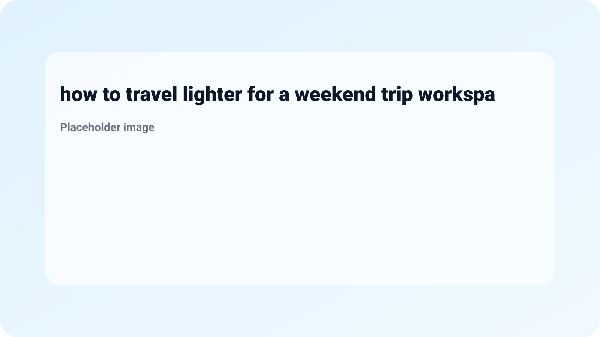
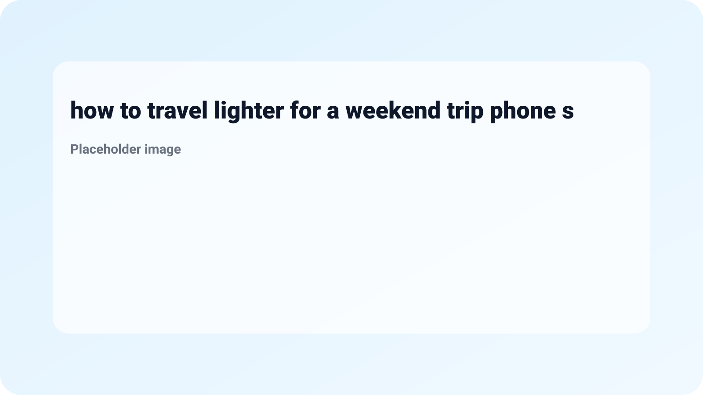
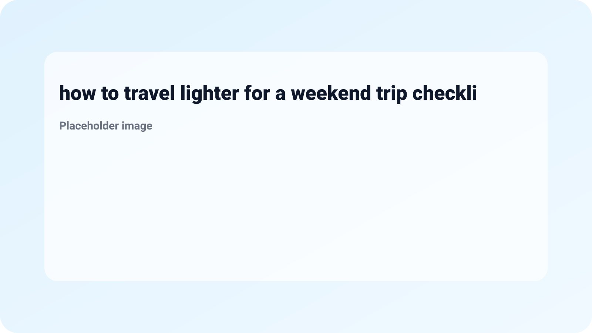
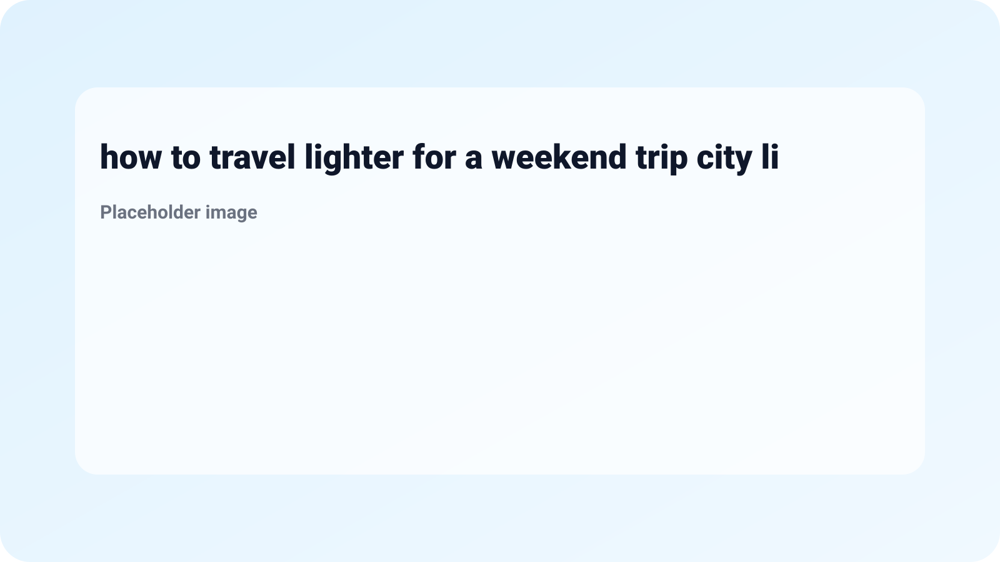

How to Travel Lighter for a Weekend Trip
Traveling can be an exhilarating experience, especially when you’re headed out for a weekend getaway. However, packing efficiently is key to ensuring a hassle-free trip. If you're wondering how to travel lighter for a weekend trip, you're in the right place. Learning this skill can save you time and energy, allowing you to focus on the adventures ahead rather than wrestling with a bulky suitcase.
Packing light isn’t just about minimizing weight; it’s about maximizing efficiency and convenience. By mastering the art of packing smartly, you’ll discover that you don’t need as much as you think for a short trip. Let’s dive into some practical tips that will help you streamline your packing routine and make the most of your weekend escape.
Begin by selecting an appropriate bag for your trip. A versatile weekend backpack or a small carry-on suitcase can make all the difference. Look for something that provides enough space while remaining lightweight. Consider:
Having a well-thought-out wardrobe plan can dramatically reduce how much you need to pack. Follow these tips:
Packing cubes are a traveler’s best friend. They help you keep your items organized and minimize the bulk in your bag. Here's how to use them:

Toiletries can quickly take up a lot of space. Here’s how to manage your personal care items:
Before you finalize your packing, make a checklist to ensure you only take what you will use. Consider these guidelines:

Even seasoned travelers can make packing mistakes that lead to heavier bags. Here are common traps to avoid:
Choose fabrics like polyester, nylon, or merino wool as they are light, moisture-wicking, and quick-drying, making them ideal for travel.

Limit accessories to versatile pieces that match multiple outfits. For example, wear your bulkier items like jackets and boots while traveling.
Absolutely! Packing cubes help you stay organized and can often yield more efficient packing, ultimately allowing you to bring more without the extra bulk.

Bring a small, lightweight laundry bag to separate dirty clothes from clean ones. You can wash items in the sink if needed.
Don’t panic. Most destinations have shops to buy essentials. Prioritize bringing only crucial items that can’t be bought at your destination.
Learning how to travel lighter for a weekend trip can not only save you physical and mental space but also enhance your travel experience. With the right bag, a well-planned wardrobe, and by avoiding common pitfalls, you’ll be able to enjoy your getaway without the stress of overpacking. For further travel tips, make sure to check out The Carry-Less Travel Kit Everyone in Their 20s Is Switching To and don’t forget to secure your important accounts with The 2 Best Password Managers of 2026 | Reviews by Wirecutter - The New York Times. Happy traveling!
More from MingMong:
Source: Link